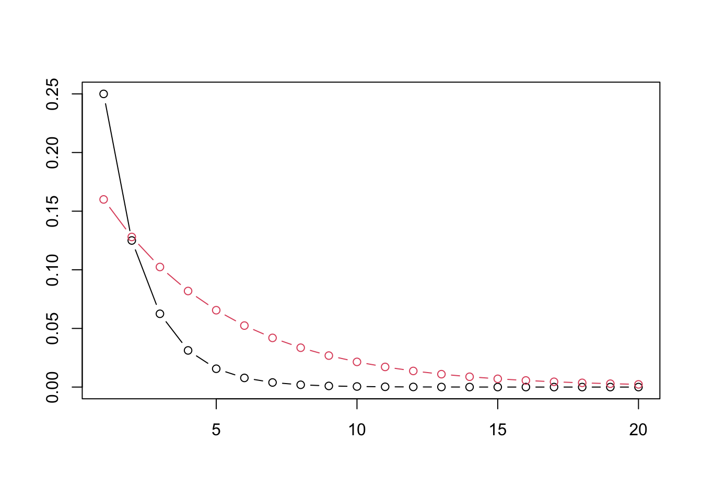
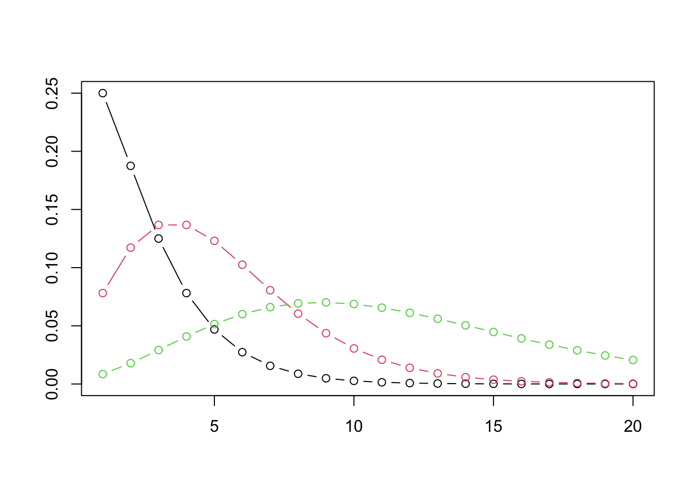

x <- 1:20
# Geometric PMF with varying parameters
y1 <- dgeom(x, prob=0.5)
y2 <- dgeom(x, prob=0.2)
# Plot the probability mass function
plot(x, y1, type="b", ann=F)
lines(x, y2, type="b", col=2)
Definition 23.1 Consider a sequence of independent Bernoulli trials, each with the same success probability \(p\). Let \(X\) be the number of failures before the first successful trial. Then \(X\) has a Geometric distribution, \(X\sim\textrm{Geom}(p)\).
Let’s derive the PMF for the Geometric distribution. By definition,
\[P(X=k)=q^{k}p\] where \(q=1-p\). This is a valid PMF because \[\sum_{k=0}^{\infty}q^{k}p=p\sum_{k=0}^{\infty}q^{k}=\frac{p}{1-q}=1.\] The expectation of \(X\) is given by
\[E(X)=\sum_{k=0}^{\infty}k\cdot q^{k}p=p\sum_{k=0}^{\infty}kq^{k}=p\frac{q}{p^{2}}=\frac{q}{p}.\] To see why this holds, taking derivative with respect to \(q\) on both sides of \(\sum_{k=0}^{\infty}q^{k}=\frac{1}{1-q}\) yields
\[\sum_{k=1}^{\infty}kq^{k-1}=\frac{1}{(1-q)^{2}};\] Then multiply both sides by \(q\):
\[\sum_{k=1}^{\infty}kq^{k}=\frac{q}{(1-q)^{2}}=\frac{q}{p^{2}}.\]
x <- 1:20
# Geometric PMF with varying parameters
y1 <- dgeom(x, prob=0.5)
y2 <- dgeom(x, prob=0.2)
# Plot the probability mass function
plot(x, y1, type="b", ann=F)
lines(x, y2, type="b", col=2)
A generalization of the Geometric distribution is the Negative Binomial distribution.
Definition 23.2 In a sequence of independent Bernoulli trials with success probability \(p\), if \(X\) is the number of failures before the \(r\)-th success, then \(X\) is said to have a Negative Binomial distribution, denoted \(X\sim\textrm{NBin}(r,p)\).
The PMF for Negative Binomial distribution, by definition, is given by
\[P(X=k)=\binom{k+r-1}{r-1}q^{k}p^{r}.\]
To compute the expectation, let \(X=X_{1}+\cdots+X_{r}\) where \(X_{i}\) is the number of failures between the \((i-1)\)-th success and the \(i\)-th success, \(1\leq i\leq r\). Then \(X_{i}\sim\textrm{Geom}(p)\). By linearity of expectations,
\[E(X)=E(X_{1})+\cdots+E(X_{r})=r\frac{1-p}{p}.\]
x <- 1:20
# Negative Binomial PMF with varying parameters
y1 <- dnbinom(x, size=2, prob=0.5)
y2 <- dnbinom(x, size=5, prob=0.5)
y3 <- dnbinom(x, size=5, prob=0.3)
# Visualize the probability mass function
plot(x, y1, type="b", ann=F)
lines(x, y2, type="b", col=2)
lines(x, y3, type="b", col=3)
Example 23.1 (Toy collector) There are \(n\) types of toys. Assume each time you buy a toy, it is equally likely to be any of the \(n\) types. What is the expected number of toys you need to buy until you have a complete set?
Solution. Define the following random variables: \[\begin{aligned}T= & T_{1}+T_{2}+\cdots+T_{n}\\ T_{1}= & \textrm{number of toys until 1st new type}\\ T_{2}= & \textrm{additional number of toys until 2nd new type}\\ T_{3}= & \textrm{additional number of toys until 3rd new type}\\ \vdots \end{aligned}\]
We know, \(T_{1}=1\), \(T_{2}-1\sim\textrm{Geom}\left(\frac{n-1}{n}\right)\),…, \(T_{j}-1\sim\textrm{Geom}\left(\frac{n-(j-1)}{n}\right)\). Thus, \[\begin{aligned}E(T)= & E(T_{1})+E(T_{2})+\cdots+E(T_{n})\\ = & 1+\frac{n}{n-1}+\frac{n}{n-2}+\cdots+\frac{1}{n}\\ = & n(1+\frac{1}{2}+\frac{1}{3}+\cdots+\frac{1}{n})\\ \to & n(\log n+0.577). \end{aligned}\]
If \(n=5\), \(E(T)\approx11\); if \(n=10\), \(E(T)\approx29\).